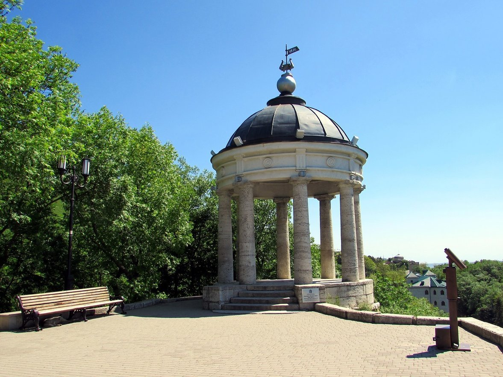

Беседка Эолова Арфа

Эту круглую белую беседку, купол которой опирается на восемь изящных колонн, можно увидеть, совсем немного удалившись к востоку от центральной части города и поднявшись на один из отрогов горы Машук.
Возле этой музыкальной беседки всегда достаточно много людей, отдыхающие любят бывать здесь как в дневное время, так и в вечернее, когда Эолова арфа красиво подсвечивается. В настоящее время площадка рядом с беседкой оборудована и благоустроена: дорожки вымощены камнями и установлены скамейки, где можно отдохнуть под прекрасные звуки арфы. В летние месяцы здесь часто продают сувенирную продукцию, включая открытки с изображениями беседки.
Создателем проекта Эоловой арфы является Джузеппе Бернардацци, который вместе со своим братом Джованни был первым архитектором таких городов на Кавказе, как Пятигорск и Кисловодск. Именно благодаря работе братьев Пятигорск стал благоустроенным популярным курортом и центром культурной жизни в первой половине XIX века. В это же время здесь жил и работал М. Ю. Лермонтов, изложивший многие свои наблюдения, связанные с городом, в повести «Княжна Мери» романа «Герой нашего времени».
Площадка, на которой находится Эолова арфа, еще до появления здесь беседки полюбилась людям: сначала военным (до 1810 года здесь находился наблюдательный пост), а потом и жителям и гостям нового курортного городка. Причина этого — широта обзора и красота открывающейся панорамы. К 1829 году согласно программе развития и благоустройства Пятигорска, на Михайловском отроге горы Машук появилась зеленая зона отдыха, с дорожками и скамьями. Самое высокое и ветреное место парка было выбрано для реализации проекта беседки в стиле античного храма, посвященной древнегреческому мифологическому персонажу — Эолу, повелителю ветров. Прообразом для Джузеппе Бернардацци стал «Храм Эола», построенный английским архитектором Уильямом Чемберсом в парке Кью недалеко от Лондона.
Строительство беседки началось в 1830-м году и закончилось в октябре 1831-го. Изначально под куполом беседки планировалось поставить статую Эола, но благодаря инициативе Ф. П. Конради — главного курортного доктора, было решено установить музыкальное устройство, очень популярное в те времена в Европе и уже появившиеся в главных городах России — Москве и Санкт-Петербурге, — эолову арфу. Две эоловы арфы были заключены в круглый деревянный корпус, соединенный с флюгером или так называемым «крылом», установленным на куполе беседки и служившим для поворота конструкции таким образом, чтобы ветер мог играть на струнах инструмента. По убеждению Конради, прекрасные звуки, издаваемые арфой, должны были благотворно влиять на душевное состояние гостей курорта.
Несмотря на то, что музыкальный инструмент демонтировался перед наступлением холодов, неоднократно исправлялся и настраивался, в 1861 году он окончательно вышел из строя и на несколько лет беседка осталась без звукового сопровождения. В 1890-х годах в теплое время года на куполе беседки стали устанавливать эолову арфу упрощенной конструкции.
Во время гражданской войны площадка вновь стала использоваться как наблюдательный пункт. Капитальный ремонт беседки был проведен лишь в 1950 году.